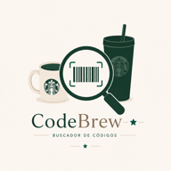

Escaneo por cámara
ListoEnfoca la etiqueta donde diga SKU # 011.... Si no reconoce, escribe el número manualmente.
Escanea o escribe un SKU para ver campaña, ruta POS, precio, código de barras y QR.

Buscador de códigos · Merch
Enfoca la etiqueta donde diga SKU # 011.... Si no reconoce, escribe el número manualmente.